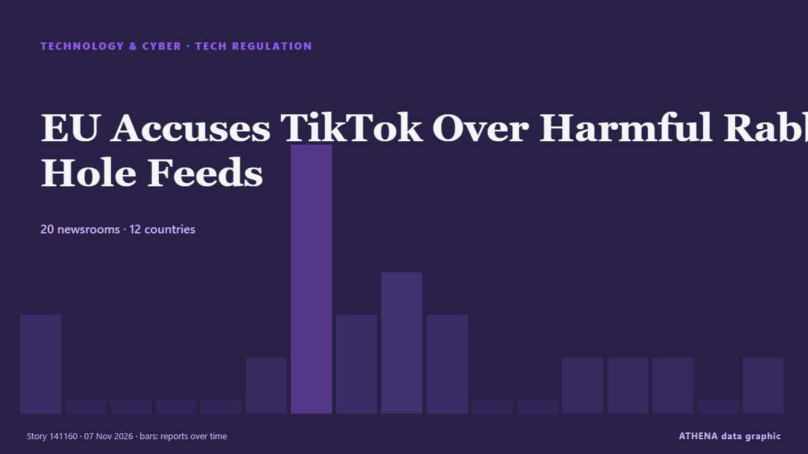

Τεχνολογία, ΤΝ & Κυβερνοασφάλεια
ΧορηγούμενοΠαρουσιάζεται από  Cybernetics and Artificial Intelligence Lab Welcome to the Cybernetics and Artificial Intelligence Laboratory, established at the Department of Business Administration of the National and Kapodistrian University of Athens. The lab is headed by Professor Dimitrios Thomakos. The lab aims to do research that can be published in top venues. Our research uses tools and methods of Artificial Intelligence, and lies in the following areas: - Forecasting - Decision making - Cyber security - Finance We are always looking forward to collaborating with exceptional students!
Cybernetics and Artificial Intelligence Lab Welcome to the Cybernetics and Artificial Intelligence Laboratory, established at the Department of Business Administration of the National and Kapodistrian University of Athens. The lab is headed by Professor Dimitrios Thomakos. The lab aims to do research that can be published in top venues. Our research uses tools and methods of Artificial Intelligence, and lies in the following areas: - Forecasting - Decision making - Cyber security - Finance We are always looking forward to collaborating with exceptional students!
Οι τίτλοι των ειδήσεων παρουσιάζονται στα αγγλικά, όπως δημοσιεύτηκαν.

Ρύθμιση τεχνολογίαςEU Accuses TikTok Over Harmful Rabbit Hole Feeds
The European Commission says TikTok’s rabbit hole feeds breach the Digital Services Act and risk mental health. από Greek City Times
| 25 Οκτ | 26 |
|---|---|
| 26 Οκτ | 78 |
| 27 Οκτ | 84 |
| 28 Οκτ | 88 |
| 29 Οκτ | 89 |
| 30 Οκτ | 80 |
| 31 Οκτ | 34 |
| 1 Νοε | 47 |
| 2 Νοε | 111 |
| 3 Νοε | 102 |
| 4 Νοε | 98 |
| 5 Νοε | 106 |
| 6 Νοε | 37 |
| 7 Νοε | 3 |
Bomb threats spread to European newsrooms after wave of passenger jet scares
Spain's foreign minister said the continent appeared to be facing "hybrid aggression and a form of psychological warfare". από ABC News Australia
3 Charged in Scheme to Use AI to Impersonate CEOs and Attorneys to Steal $129 Million
Three people accused of using artificial intelligence to impersonate corporate executives and attorneys to steal about $129 million have been indicted on charges of wire fraud and aggravated identity… από The Canadian Press (via CityNews)
Google plans $17 billion Wyoming data center amid rising threats of curbs
Investments will occur during 2027 and 2028. από Data Center Dynamics
OpenAI's new GPT-6 Cyber AI finds 81 Firefox flaws, 948 Linux bugs
OpenAI has revealed GPT-6 Cyber, a new artificial intelligence model that has discovered 81 previously unknown high-severity Firefox vulnerabilities and developed working exploits for 948 distinct… από BleepingComputer
Russell Brand’s barrister reports himself to regulator after tirade against journalist
Ian Winter told Rosamund Urwin shortly after guilty verdict, 'You f***** it' από Irish Examiner
Salon is shutting down after 31 years
Salon launched 31 years ago as one of the first online-only news magazine outlets, and it announced today in an unsigned post that it's ceasing publication. από The Verge
Jack Grealish agreement reached as Everton manager David Moyes told what to do
Jack Grealish has missed the last three Everton games after breaching club discipline and David Moyes has been told how to deal with the winger. από Liverpool Echo
Could the AI bubble burst after Democrats' midterms sweep? - The Latest
Global tech stocks have plunged after the Democrats’ victory in the US midterm elections, with fears of a slowdown in AI development. από Guardian Business
Staff at RTE campus evacuated after bomb threat
It comes after bomb threats were sent to airlines, including an Aer Lingus flight from Dublin, over recent days. από The Irish News (Belfast)
Azerbaijani Parliament speaker participates in Aqaba Process meeting in Astana
President Shavkat Mirziyoyev will visit Astana on November 5–6 to attend a meeting of Central Asian leaders under the Aqaba Process, which will focus on artificial intelligence security and… από Kun.uz (English)
NASA announces experimental X-70 Fractal aircraft: A 'new beginning for aeronautics'
NASA has announced its next X-plane, known as the X-70 Fractal, designed to test advanced maneuverability and which will feature a rapidly reconfigurable design. από Space.com
Google turns off AI for schoolchildren by default
Google has said it will switch off its AI tools for schoolchildren by default, after drawing criticism for pushing artificial intelligence features to students while schools are still debating how… από Vanguard
600,000 Nvidia Chips Pile Up in Hong Kong Awaiting China’s Import Approval
About 600,000 Nvidia H200 artificial intelligence chips remain stored in Hong Kong, awaiting shipment to mainland China as Beijing has yet to approve large-scale imports despite strong demand from… από Colombia One
Ukraine Seeks New Contract for Starshield Amid Connectivity Challenges
Despite the still unexplained speed limitations imposed on Ukraine by the Starshield satellite network last month, Kyiv is pushing for renewal of the agreement with the US government due to expire in… από Kyiv Post
China blocks SoftBank's $5.4bn deal for ABB robotics division
The block adds a regulatory overhang to SoftBank on a day the shares were already under pressure from Arm and the AI selloff, and uncertainty over whether a fresh application is viable may keep that… από investingLive (ForexLive)
US warns of 'ongoing cyber threat' to industrial refrigeration systems
Urges industrial refrigeration control system operators to apply software updates, pull devices off public internet. από Express Tribune
Airbnb is working on an AI travel agent
Airbnb plans to roll out an AI agent in the first half of 2027 that will help users plan and book travel, the company said in its Q3 2026 earnings shareholder letter released today. από The Verge
US voters back data center restrictions amid backlash over artificial intelligence expansion
Local bans, development limits gain support as new Democratic governors in Texas, Georgia pledge tougher oversight. από Anadolu Agency (English)
Tencent launches Hy4 model to boost visual reasoning, AI safety
Tencent has launched its next-generation artificial intelligence (AI) model, Hy4, adding visual understanding for the first time and limiting cybersecurity training data to reduce the risk of misuse… από DigiTimes Asia
AI sharpens cat-and-mouse hacking battle as companies strengthen defences
From hacked supermarket fridges and a record cryptocurrency theft at Binance to an emergency over flaws in widely used web software, companies worldwide are facing a wave of cyber threats executives… από Tuoi Tre News
Texas data centers face uncertain future after Hinojosa wins governor’s race
Texas governor-elect Gina Hinojosa has rattled the state's data center industry with a campaign pledge to halt new projects, injecting new uncertainty into one of the country's fastest-growing… από Korea Herald
Apple spyware alerts reach German MPs and journalists in 99 countries
Germany’s cybersecurity agency has told lawmakers who got Apple’s spyware warnings to treat their iPhones as possibly compromised. από The Next Web
Was Elon Musk the US midterms' biggest loser? – Stateside with Kai and Carter
The tech industry spent big on the midterms, but it turned out to be a poor investment. από Guardian Business
Musk’s Tesla, SpaceX slide as Democrats take control of Congress
Tesla shares drop 2.6% and SpaceX slides 2.1% in early trading as Musk-backed Republicans lose Texas Senate and governor’s races. από Anadolu Agency (English)
S. Korea posts record high current account surplus of over US$60 bln in Sept. on chip supercycle
SEOUL, Nov. 5 (Yonhap) -- South Korea posted an all-time high current account su... από Yonhap (English)
Hackers target French blood bank refrigeration
Greece's National Cybersecurity Authority urges businesses to strengthen their digital defences following new attacks on fridge and freezer systems. από to vima
Disinformation threatens trust in election results: Researcher
Research has shown that disinformation is threatening trust in election results, and not just voter. από SABC News
National Blood Centre says raise guard after France cyber attacks on blood banks
(ANSA) - ROME, 04 NOV - Italy's National Blood Centre on Wednesday called on Italian blood banks to raise their level of vigilance following cyber attacks in France that targeted the refrigeration… από ANSA English
Hackers use n-day exploits in zero-click attacks on iOS, Android devices
A large-scale watering hole attack associated with Russian hackers has been targeting iOS and Android users visiting compromised sites or fake ones impersonating legitimate portals. από BleepingComputer
Marvell to buy Lumentum in $115 billion all-stock deal
Marvell has agreed to acquire Lumentum for $115 billion, combining its optical DSPs, SerDes, silicon photonics, and networking silicon with Lumentum’s lasers, transceivers, optical switches, and InP… από Tom's Hardware
Israel's detention of Abou Shhadeh 'a campaign to silence'
Israeli forces detained Palestinian journalist Abed Abu Shehadeh over an interview with Azmi Bishara, as threats against Arab political leaders intensified. από The New Arab
Democrats Prepare Musk Probe Over Satellite Cuts
Senate Democrats have asked Elon Musk to preserve documents concerning the slowdown of Starshield in Ukraine, CNN reported. από Kyiv Post
SpaceX is working with Qualcomm to build its Starlink Mobile 5G network
SpaceX is teaming up with Qualcomm to build out its nationwide mobile network. από The Verge
Qualcomm’s smartphone chip sales miss estimates, shares fall
Adjusted sales in Q4 fell 7% to US$10.44 billion, beating estimates of US$10.11 billion. από The Business Times